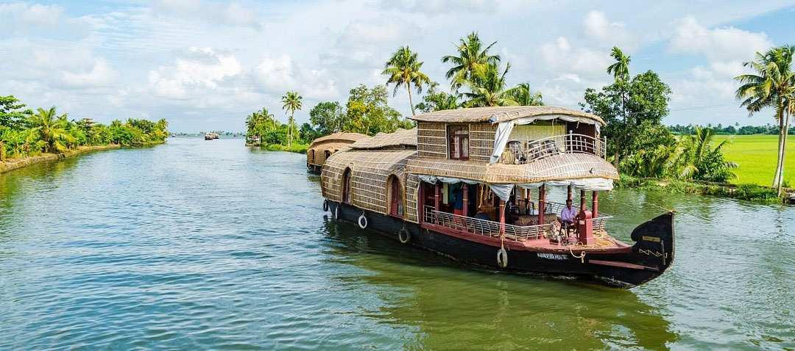
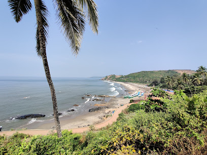
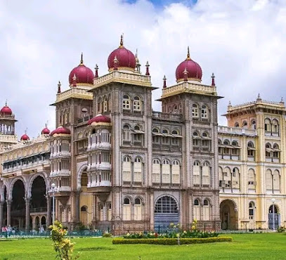

India is a land of rich culture, history, and diversity. From ancient monuments to beautiful beaches, India offers unforgettable travel experiences for every traveler.
A world-famous white marble monument located in Agra.
The Taj Mahal, built by Emperor Shah Jahan in memory of his beloved wife Mumtaz Mahal, is a UNESCO World Heritage Site and one of the New Seven Wonders of the World. Its stunning architecture, intricate carvings, and beautiful gardens make it a must-visit destination.

The Pink City of India, famous for its royal palaces and forts.
Jaipur, the capital of Rajasthan, is known for its stunning architecture, vibrant culture, and rich history. Key attractions include the Hawa Mahal, City Palace, Amber Fort, and Jantar Mantar. The city's bustling markets offer traditional Rajasthani crafts, textiles, and jewelry.

A network of peaceful canals and lagoons surrounded by lush greenery.
The Kerala Backwaters are a unique ecosystem of interconnected canals, rivers, lakes, and inlets that run parallel to the Arabian Sea coast. A houseboat cruise through the backwaters offers a serene experience, allowing visitors to witness traditional village life, diverse wildlife, and stunning landscapes.
A popular beach destination known for its nightlife and scenic beaches.
Goa, located on the western coast of India, is famous for its beautiful beaches, vibrant nightlife, and Portuguese heritage. Visitors can enjoy water sports, beach parties, and explore historic churches and forts. Popular beaches include Baga, Anjuna, and Palolem.
A magnificent royal palace known for its stunning architecture.
The Mysuru Palace, also known as Amba Vilas Palace, is a grand royal residence in the city of Mysuru, Karnataka. It showcases a blend of Hindu, Muslim, Rajput, and Gothic architectural styles. The palace is especially beautiful when illuminated at night during the Dasara festival, attracting numerous visitors.
